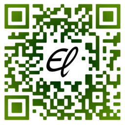

心蛛小站
- 科技新闻速递 – 整理我每天阅读到的科技新闻，做一下摘要。
- 博客 – 随手写的一点东西，未经分类。
- 话题列表 – 收集一些我感兴趣的话题。
- 翻译练习 – 为练习语言，或者看到一些好玩的东西，做一下简单的转译。
- 旧档案 – 收集或过去自已写的一些东西，未经归类。
- GitHub 项目 中相对重要的收藏有：
- MIDAS – 数据获取软件 MIDAS (PSI) 的 镜像。
- CAEN-Suite – 在 Linux 下使用 CAEN 硬件的数据采集代码。
- el-scripts – 个人编写的一些零散的代码，
- 另有部分代码放在 我的 gist 上。
- 本站变更记录
近期文章列表：
- 2013-10-21: 译 – 宏观还是微观？——测试你的尺度感觉
- 2013-10-13: 类比与科学
- 2013-10-13: 万国码中的性别符号
- 2013-10-09: 译 – 新闻：使用中子的新型显微镜
- 2013-10-05: 译 – 宗教会如何消亡？
- 2013-09-29: 译 – 新闻：针尖大小的世界最小显微镜
- 2013-09-21: 译 – 一百个人：世界的印象
- 2013-09-18: 大数据的信息时代：机遇与挑战
- 2013-09-12: 译 – 跟我玩吧！
- 2013-09-11: 译 – 世界上那些最美的方程
- 2013-08-29: 看穿大地的“眼睛”
- 2013-08-25: 有一种爱叫“为你而改变”
- 2013-07-12: 译 – 缓慢的科学 (2013-03-21, 《自然》报道)
- 2013-07-10: 译 – 粒子物理如何改进你的生活
- 2013-07-10: 做快乐的无神论者
- 2013-02-27: “与智慧同在！”
- 2013-02-22: 信息时代的智慧
我的数字指纹
404E 530C E165 882A 6890 DC5D E10F B984 57D7 5560
个人图标：  , 意为 Exaos Lee 的首字母合写。
, 意为 Exaos Lee 的首字母合写。

我的哲学: KISS = Keep It Simple and Stupid.
喜欢简单的生活，喜欢简单的快乐，喜欢所有新鲜的东西。